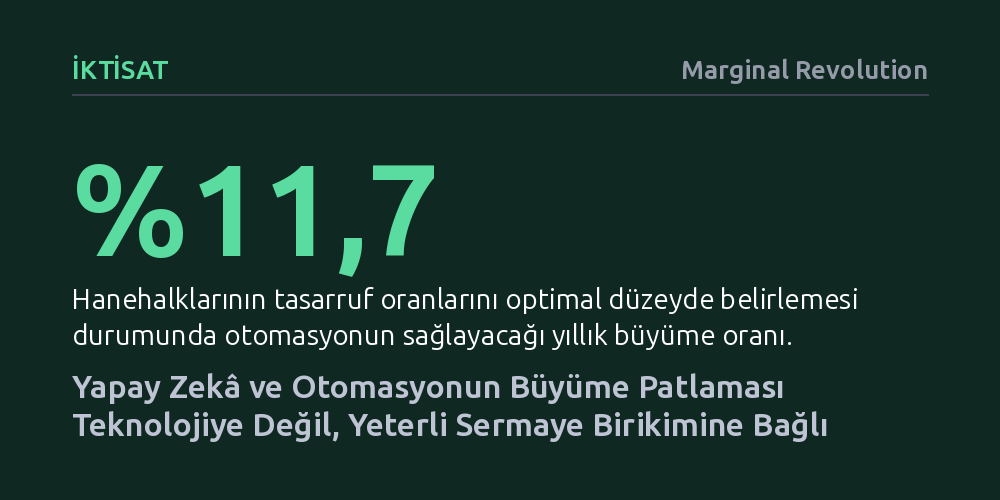

IKTISAT · Marginal Revolution · 2026-10-21
Otomasyonun tetikleyeceği ekonomik büyümenin büyüklüğünü teknolojinin sınırları değil, sermaye birikimi ve tasarruf oranı belirliyor. Hanehalkı tasarrufları yeni getirilere göre optimize edildiğinde yıllık büyüme yüzde 11,7'ye ulaşırken, tasarruf oranının mevcut seviyede sabit kalması büyümeyi yüzde 2,2'ye hapsediyor.
Otomasyon çağında beklenen refah artışının önündeki asıl engelin yapay zekânın yetenekleri değil, makineleri finanse edecek fiziksel ve finansal sermaye yetersizliği olduğunu gösterir.

Yapay zekâ ve otomasyon teknolojilerinin üretim süreçlerini nasıl dönüştüreceğine dair tartışmalar, genellikle makinelerin ve algoritmaların hangi insani görevleri devralabileceğine odaklanıyor. Ancak makroekonomik dinamikler incelendiğinde, ortaya çıkacak büyümenin boyutunu teknolojinin sınırlarından ziyade ekonominin bu teknolojiyi ne ölçüde finanse edebildiği belirliyor. Standart bir görev temelli model üzerinden yapılan yeni analiz, sermaye arzının otomasyon kaynaklı büyüme patlamasının hacmini belirleyen temel güç olduğunu ortaya koyuyor.
Modele göre görev yapısı, yani makinelerin yapabileceği işlerin kapsamı, yalnızca büyüme patlamasının süresini ve reel ücretlerin seyrini tayin ediyor. Buna karşılık, ortaya çıkacak sıçramanın ne kadar büyük olacağını yöneten asıl unsur sermaye birikimi oluyor. Dolayısıyla gelecekte otomasyona rağmen beklenenden yavaş bir büyüme görülürse, bunun sebebi teknolojik bir darboğaz değil, makineleri üretmek ve yaygınlaştırmak için gereken sermaye birikiminin yetersiz kalması olacaktır.
Araştırmanın ortaya koyduğu en somut ve çarpıcı sonuç, tasarruf davranışının büyüme üzerindeki tayin edici etkisini gösteriyor. Aynı teknolojik ilerleme patikası altında hanehalklarının tasarruf kararlarını piyasadaki yeni getirilere göre serbestçe ve optimal biçimde ayarlayabildiği bir ekonomide, yıllık büyüme oranı yüzde 11,7'ye fırlıyor. Sermaye getirilerinin yükselmesine güçlü bir tasarruf artışıyla yanıt verildiğinde, otomasyon gerçek bir ekonomik patlamaya dönüşüyor.
Buna karşılık hanehalklarının tasarruf oranı ABD'nin 2025 yılı için kalibre edilen mevcut seviyesinde, yani yüzde 23'te sabit kaldığında, aynı teknolojik potansiyel yalnızca yüzde 2,2'lik cılız bir yıllık büyüme üretebiliyor. Bu muazzam uçurum, sermaye arzının esnek olmadığı bir yapay zekâ çağının büyük bir büyüme hayal kırıklığıyla sonuçlanabileceğini kanıtlıyor.
Üstelik modeldeki tasarruf artışı, insanların aniden daha tutumlu veya erdemli hale gelmesinden kaynaklanmıyor. Tasarruf oranının tırmanmasının ardındaki asıl mekanizma, otomasyonun toplam milli gelir içinde sermayenin payını emeğe kıyasla belirgin biçimde artırmasıdır. Sermaye sahiplerinin ve kârların gelir pastasından daha fazla pay alması, sisteme kendiliğinden daha yüksek bir tasarruf akışı sağlıyor.
Yatırımlara duyulan bu devasa ihtiyaç, finansal piyasaları derinden sarsacak bir getiri patlamasını beraberinde getiriyor. Uzun vadeli tahviller bu süreci hızla fiyatlıyor ve 10 yıllık reel faiz oranı başlangıç anında yüzde 5,1'den yüzde 13,6'ya sıçrıyor. Böylesi olağanüstü bir faiz artışı sermaye sahiplerine tarihi kazançlar vadedebilir; fakat sermaye piyasalarına erişimi olmayan ve emeğiyle geçinen kesimler için ağır bir refah kaybı anlamına geliyor.
Modelin temel kalibrasyonuna göre, günübirlik yaşayan ve hiçbir finansal birikimi bulunmayan hanehalkları, tüketimlerinin beşte ikisi ile üçte ikisi arasındaki bir bölümünü kaybediyor. Ücretlerin baskılandığı ve getiri akışının sermayeye kaydığı bu ortamda, sermaye varlığına sahip olmayan geniş kitleler reel olarak ciddi bir yoksullaşma riskiyle karşı karşıya kalıyor.
Buna rağmen çalışma umut verici bir mali dengeye de dikkat çekiyor. Dezavantajlı ve tasarrufsuz hanehalklarını geçici olarak eski tüketim ve refah trendlerinde tutmanın maliyeti, en fazla toplam gayrisafi yurtiçi hasılanın beşte biri kadar tutuyor. Bu da otomasyonun yaratacağı büyüme pastasından ayrılacak makul bir yeniden bölüşüm mekanizmasının, toplumsal dengeleri korumak için yeterli olabileceğini gösteriyor.